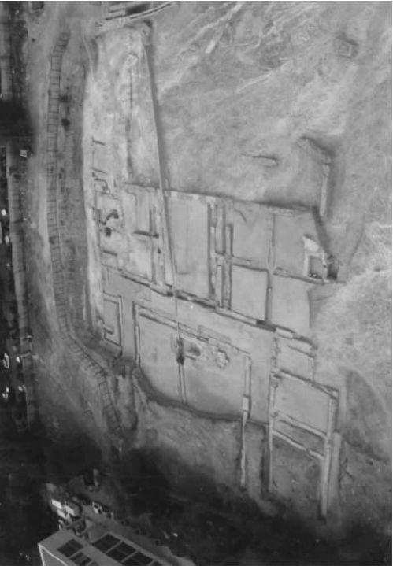

亚里士多德是作为一个系统的思想家为人所知的。不同的科学既是独立的，又是系统地相互关联的。每一个单个学科都是以公理体系的形式——就像后来的哲学家所说的那样，“以几何的方式”提出和表述的。而且，亚里士多德的学科概念赖以栖身的那组观念本身就得到了系统的研究和整理。也许这没有什么令人惊讶的。毕竟，哲学的本质就在于系统性；并且亚里士多德的系统——他的世界“图景”——许多世纪以来一直被人赞赏和称道。
然而，也有一些学者对亚里士多德的这种观点持有异议。他们否认他是个系统的构造者。由于不相信系统哲学的宏伟断言，他们认为亚里士多德的优点在其他方面。在他们看来，亚里士多德的哲学实质上是“难题解答式的”：它的精髓在于提出特定的困惑或难题（aporiai），并提出特定的解决方法。亚里士多德的思想是试探性的、可变通的、不断变化的。他没有设计一个宏大的方案，然后往里面填写细节；他也没有向着单一的目标使用单一的方法。相反，细节就是全部；并且论证方法和模式也随着所解释主题的变化而不断地变化。亚里士多德的论证是逐项完成的。
这种对亚里士多德思想的非系统性解释现在被广泛接受。有很多证据可用以支持这一解释。比如，《形而上学》第三卷就有一长串的难题目录，并且该书的其他内容大都用于解答这些难题。或者考虑一下这段引文：“此处，像别处一样，我们必须记下各种现象，首先仔细检查这些难题，然后我们必须验证关于这些问题的著名观点——可能的话就验证所有的观点，否则就验证大多数和最重要的观点。”首先记下关于该问题的主流观点（“各种现象”，或“似乎如此的事物”，是指关于该主题的可信观点）；然后仔细阅读这些观点所提出的难题（因为这些难题也许很模糊，或者因为它们相互不一致）；最后证明所有或者大部分观点是正确的。这不是系统构建的处方；不过，这是亚里士多德推荐并有时遵循的方法。
此外，这种难题解答式说法似乎恰当解释了亚里士多德著作的一个方面，该方面如果按照传统方法来解释肯定会令人困惑。亚里士多德关于学科的专题论述从来不是以公理化形式呈现的。《后分析篇》中所给出的解答并没有在后来的著述，比如《气象学》和《动物结构》中得到遵循。这些专题论述没有先确定公理，然后接着推导定律；相反，它们提出并试图回答一系列相互关联的问题。按照传统观点，这些专题论述看起来一定——说句自相矛盾的话——完全不是亚里士多德式的了：所鼓吹的系统在这里完全不明显了。按照难题解答式说法，这些著述反映了亚里士多德哲学的精髓：他偶尔对系统化进行的思考不可太当真——它们只不过是对柏拉图式学科概念的礼仪性姿势而已，并不能证明亚里士多德自己的根本信念。
不可否认的是，亚里士多德的许多专题论述在风格上大部分都是难题解答式的——它们讨论问题，并且逐项讨论。同时不可否认的是，这些专题论述在公理化推导方法方面内容很少，甚至没有。但是，这并不是说亚里士多德实质上不是个系统的思想家。在《后分析篇》中所阐释的学科理论，不能被当做一种不相关的古董、一次对柏拉图灵魂的屈膝而加以拒绝。在这些主题论述里有这么多关于系统化的暗示，以致对难题的解答不能被看做亚里士多德科学和哲学研究中最首要的事情；并且——值得强调的一点是——即使对单个问题进行的逐项讨论，也通过研究和回答这些问题的共同概念框架而获得了思维上的统一。系统化不是在专题论述里实现的，而是在其背后存在的一种理念。

图101996年发掘的吕克昂遗址。“吕克昂不是私立大学：它是个公共场所——是一座圣殿、一所高级学校。一个古老的传说是这样的：亚里士多德上午给学生授课，晚上则给一般公众作讲座。”
那么，关于亚里士多德著作的非系统化特征我们又有什么要说的呢？第一，不是所有的亚里士多德专题论述都是科学著作：许多是关于科学的著作。《后分析篇》就是一个恰当的例子。该专题论述不是公理化陈述，但它是一个关于公理化方法的专题论述——它关心的不是科学的发展，而是分析发展科学的方法。此外，《物理学》和《形而上学》的许多部分都是关于我们所称的科学之基础的论文。我们不应指望，关于科学之结构和基础的作品本身就体现出学科内作品应有的特征。
但是，亚里士多德那些真正的科学作品所具有的“难题解答式”特征又该如何解释呢？比如，为何《气象学》和《动物结构》没有按公理化方式表述呢？答案很简单。亚里士多德的系统是为精致的或完整的科学所进行的一个设计。《后分析篇》没有描述科学研究者的活动：它确定了对研究者的研究结果进行系统化组织和呈现的形式。亚里士多德所了解、所推动的科学不是完整的，他也不认为它们是完整的。也许他有过乐观的时刻：古罗马的西塞罗称“亚里士多德指责那些认为哲学已经被他们完善的老哲学家们，说他们要么非常愚蠢，要么非常自负；但他本人能够看出，由于短短几年内取得了巨大进展，哲学可能会在很短的时间里得到圆满地完善”。但事实上，亚里士多德从未吹嘘说完善了知识的任何一个分支——也许除了逻辑学之外。
亚里士多德所述足以让我们看到，在一个理想的领域里，他本可以如何表述并组织他辛勤积累起来的科学知识。但是他的系统化方案是为一个完整的科学而准备的，他本人在世时并未发现所有知识。由于这些专题论述并非对成熟学科的最终表述，我们不应期望在它们之中看到一系列按序展开的公理和推论。因为这些专题论述最终是要表达一门系统学科，我们可以期待它们能显示出如何实现这样的系统。这正是我们所发现的：亚里士多德是个系统的思想家；他幸存下来的专题论述展现的是其系统的一张局部的、未完成的草图。